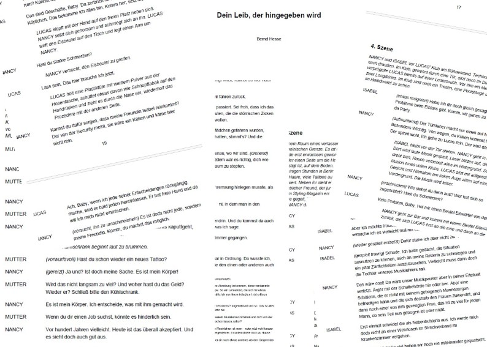

Dramatische Arbeiten / Theater
Auch die dramatische Form gehört zu Bernd Hesses schriftstellerischen Erkundungen. Neben verschiedenen Entwürfen und Versuchen entstand mit Dein Leib, der hingegeben wird ein vollständig ausgearbeitetes Drama.
Das Stück führt in eine Welt von Nähe und Fremdheit, Begehren und Verletzlichkeit, Selbstbestimmung und Abhängigkeit. Im Mittelpunkt stehen Menschen, die nach Freiheit suchen und dabei immer wieder an die Grenzen ihrer Beziehungen – und an ihre eigenen – geraten.
Der Dialog wird dabei zum eigentlichen Ort des Geschehens: unmittelbar, mitunter scharf, zugleich aber offen für das Ungesagte hinter den Worten.

Dein Leib, der hingegeben wird steht innerhalb des bisherigen Werks für einen Ausflug in eine andere literarische Form – und für den Versuch, Figuren nicht erzählend zu begleiten, sondern sie ganz aus ihrer Sprache und ihrem Handeln hervortreten zu lassen.